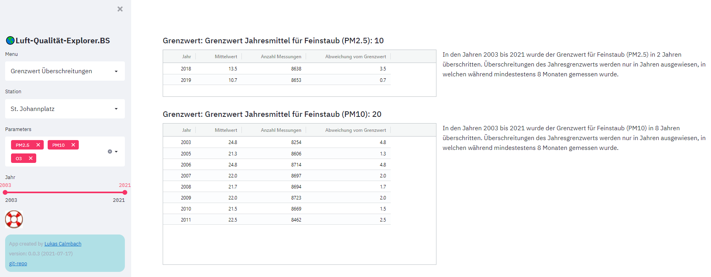

Grenzwert Überschreitungen
Für Luftschadstoffe existieren verschiedene Arten von Grenzwerten und ein Grenzwert mit definierter Toleranzgrenze kann Zusatzauflagen haben. - Emissionsgrenzwerte definieren die Toleranzgrenze, die bei Schadstoffquellen (Heizungen, industrielle Anlagen) auftreten dürfen. Überschreitungen der Emissionsgrenzwerte können in der Regel durch das Aufrüsten oder im Extremfall mit der Stillegung der betroffenen Anlage einfach gelöst werden. - Imissionsgrenzwerte sind Grenzwerte für das den in der Umwelt gemessenen Werts. Imissionen können nicht einfach einer Anlage zugeschrieben werden denn sie sind das Resultat eines komplexen Zusammenspiels von Emissionsquellen und meteorologischen Konditionen. Alle in dieser Applikation publizierten Daten sind Immissionswerte und alle verwendeten Grenzwerte sind somit Imissionsgrenzwerte. - Grenzwerte für verschiedene Zeitintervalle: Da Luftschadstoffe stark variieren können, bezieht sich jeder Grenzwert auf ein definiertes Zeitintervall. Je länger das Zeitintervall, desto tiefer ist in der Regel der Grenzwert. Für den gleichen Schadstoff können somit verschiedene Grenzwerte definiert sein: z.B. für Feinsatub PM10: 20µg/m³ für das Jahresmittel und 50µg/m³ für den Tageswert. - Anzahl erlaubte Überschreitungen: Neben der Höhe der Toleranzgrenze kann definiert sein, wie viele Überschreitungen pro Jahr toleriert werden.
LQX-BS gibt in der Menuoption Grenzwert Überschreitungen eine gute Übersicht über die historische Entwicklung der Grenzwert-Überschreitungen der untersuchten Luftschadstoffe. In einer Tabelle pro Schadstoff werden alle Jahre, in denen Überschreitungen aufgetreten sind dargestellt:
- Für PM2.5 existiert einzig ein Grenzwert für das Jahresmittel von 10µg/m³. Neben der Angabe der Überschreitung wird auch die Differenz des Jahresmittel zum Grenzwert ausgewiesen, da die Höhe der Überschreitung für die gesundheitlichen Auswirkungen relevant sind.
- Für PM10 existiert ebenfalls ein Jahresmittelgrenzwert von 20µg/m³ sowie ein stringenterer Grenzwert von 50µg/m³, für den Tagesmittelwerte, der höchstens 3 Mal pro Jahr überschritten werden darf.
- Für Ozon ist ein Grenzwert für das Stundenmittel von 120µg/m³ festgelegt, welcher höchstens einmal pro Jahr überschritten werden darf.

Es ist zu beachten, dass alle Berechnungen von LQX-BS auf unplausibilisierten Rohdaten beruhen. Kleinere Abweichungen der Anzahl Überschreitungen und der berechneten Mittelwerte sind möglich. Genauere und vor allem weiterführende Informationen zur Luftqualität in bestimmten Jahren kann den Jahresberichten des Lufthygieneamts beider Basel entnommen werden.